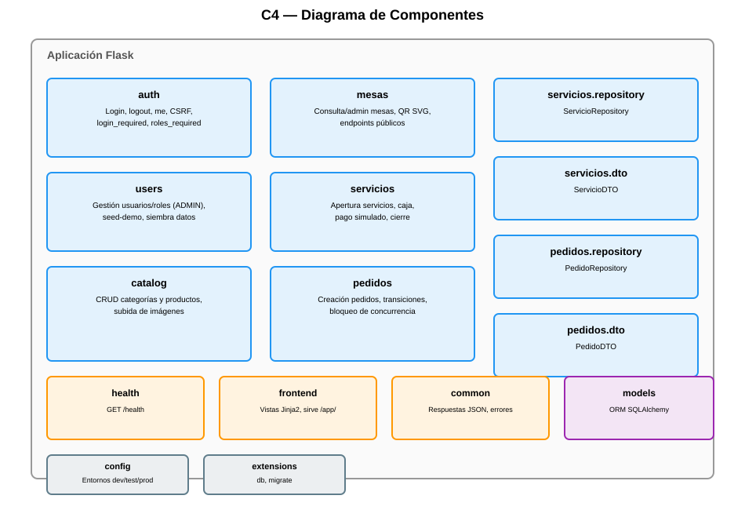
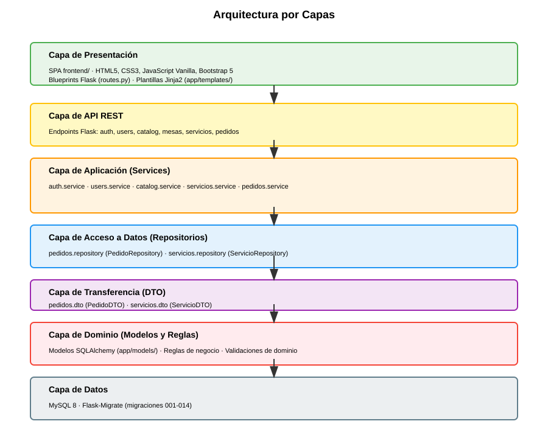
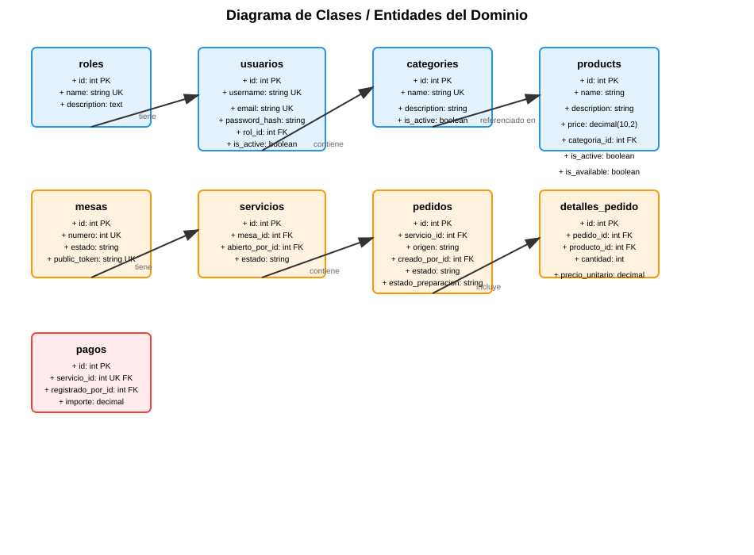
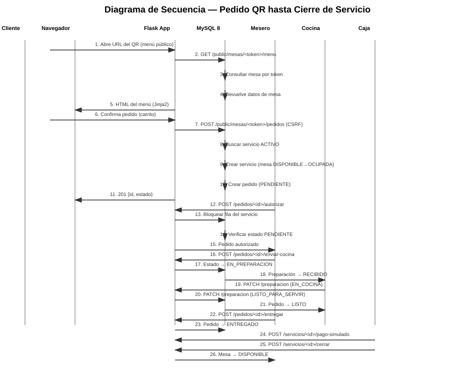

1.3 Funcionalidades excluidas del MVP
Según PLAN_DE_TRABAJO_MVP.md §6, no se implementan: multirestaurante/multisucursal, reservas, delivery, inventario detallado, facturación electrónica, pasarelas de pago reales, notificaciones push/email, reportes avanzados, roles adicionales.
1.4 Decisiones pendientes (no asumir como aprobadas)
Según PLAN_DE_TRABAJO_MVP.md §9, requieren confirmación explícita del usuario:
- Medio(s) de pago exactos aceptados en caja.
- Si se requiere comprobante/factura impresa o digital por pago.
- Política de cancelación de pedidos y reembolsos.
- Tiempo de expiración de sesión de usuarios autenticados.
- URL base y dominio para generación de QR.
- Política de retención de datos y borrado de pedidos históricos.
2. Tecnologías utilizadas
Evidencia verificada: requirements.txt, AGENTS.md §2, README.md §2.
| Componente | Tecnología | Versión mínima |
|---|---|---|
| Backend | Flask (Python) | >=3.0.0 |
| Lenguaje backend | Python | — |
| Frontend | HTML, CSS, JavaScript Vanilla | — |
| Base de datos | MySQL 8 | — |
| ORM / migraciones | SQLAlchemy, Flask-Migrate | >=3.0.0 / >=4.0.0 |
| Pruebas | Pytest | >=8.0.0 |
| Driver MySQL | PyMySQL | >=1.1.0 |
| Variables de entorno | python-dotenv | >=1.0.0 |
| Generación QR | segno | >=1.4.0 |
El archivo .env está en .gitignore y no se sube al repositorio. Las variables sensibles (URI de MySQL, SECRET_KEY, PUBLIC_BASE_URL) se configuran mediante variables de entorno.
3. Arquitectura Flask actual
Evidencia verificada: app/__init__.py, app/extensions.py, app/config.py, AGENTS.md §7.
La aplicación sigue el patrón factory create_app() con instancia db a nivel de módulo y migraciones mediante Flask-Migrate.
3.1 Factory de la aplicación (app/__init__.py)
- Crea la instancia Flask con configuración relativa a la instancia.
- Carga configuración por entorno (
development,testing,production). - Inicializa
SQLAlchemyyFlask-Migrate. - Registra manejadores globales de errores.
- Registra los siguientes blueprints:
| Blueprint | Prefijo de URL | Archivo |
|---|---|---|
health_bp | /health | app/health/routes.py |
frontend_bp | / | app/frontend/routes.py |
auth_bp | /auth | app/auth/routes.py |
mesas_bp | /mesas, /admin/mesas | app/mesas/routes.py |
public_mesas_bp | /public/mesas | app/mesas/public_routes.py |
users_bp | /users | app/users/routes.py |
categories_bp | /categories | app/catalog/routes.py |
products_bp | /products, /admin/products | app/catalog/routes.py |
servicios_bp | /servicios | app/servicios/routes.py |
pedidos_bp | /pedidos | app/pedidos/routes.py |
La protección CSRF global (protect_csrf de app/auth/csrf.py) se aplica mediante before_request en la factory.
3.2 Configuración (app/config.py)
SESSION_COOKIE_HTTPONLY = TrueSESSION_COOKIE_SAMESITE = "Lax"SESSION_REFRESH_EACH_REQUEST = FalsePERMANENT_SESSION_LIFETIME = timedelta(hours=8)SECRET_KEYdesde variable de entorno (valor por defecto solo en desarrollo).SQLALCHEMY_DATABASE_URIdesdeDATABASE_URL.SQLALCHEMY_ENGINE_OPTIONS:pool_pre_ping = True,pool_recycle = 3600.TestingConfig: usa SQLite en memoria por defecto (TEST_DATABASE_URL).ProductionConfig:SESSION_COOKIE_SECURE = Truey exigeSECRET_KEYsegura.
3.3 Extensiones (app/extensions.py)
Instancia db = SQLAlchemy() e migrate = Migrate() a nivel de módulo, importadas por la factory.
4. Módulos y responsabilidades
Evidencia verificada: Código fuente en app/, contratos en app/catalog/CONTRACT.md y app/pedidos/CONTRACT.md.
| Módulo | Archivos principales | Responsabilidad |
|---|---|---|
auth | routes.py, service.py, decorators.py, csrf.py | Autenticación (login/logout/me), token CSRF, decoradores login_required y roles_required. |
users | routes.py, service.py, cli.py | Gestión de usuarios y roles (ADMIN), comando seed-demo, siembra de datos de demostración. |
catalog | routes.py, service.py, CONTRACT.md | CRUD de categorías y productos (público y ADMIN), subida/eliminación de imágenes de producto. |
mesas | routes.py, public_routes.py | Consulta y administración de mesas, generación de QR SVG, endpoints públicos de mesa y menú. |
servicios | routes.py, service.py | Apertura de servicios, listado/consulta de servicios, operaciones de caja (pago simulado, cierre). |
pedidos | routes.py, service.py, CONTRACT.md | Creación de pedidos, transiciones de estado (autorizar, enviar cocina, preparación, entregar), bloqueo de concurrencia. |
health | routes.py, service.py | Health check GET /health. |
frontend | routes.py | Vistas HTML renderizadas por Flask (login, paneles por rol, menú público). |
common | responses.py, errors.py | Formato de respuestas JSON (success_response/error_response) y registro de manejadores de error. |
models | base.py, usuario.py, rol.py, category.py, product.py, mesa.py, servicio.py, pedido.py, detalle_pedido.py, pago.py | Modelos ORM SQLAlchemy con clase base abstracta BaseModel (id, created_at, updated_at). |
4.1 SPA de Agente A (frontend/)
Evidencia verificada: Rama feat/spa-vanilla-bootstrap (origin/main, PR #51). Archivos: frontend/index.html, frontend/js/api.js, frontend/js/app.js, frontend/js/components.js, frontend/js/state.js, frontend/js/views/*.js, frontend/css/style.css.
La SPA (Single Page Application) de Agente A se implementó en la carpeta frontend/ utilizando HTML5, CSS3, JavaScript vanilla y Bootstrap 5.3.2. No modifica el backend y conserva los contratos reales de Flask.
4.1.1 Características de la SPA
- Navegación por hash: enrutado basado en
window.location.hashcon rutas#login,#public,#waiter,#kitchen,#cashier,#admin. - Componentes reutilizables: módulos de vista por rol (
LoginView,PublicView,WaiterView,KitchenView,CashierView,AdminView). - Estado y API REST: capa de estado (
state.js) y cliente de API (api.js) que consume los endpoints Flask mediantefetchcon autenticación por sesión y token CSRF (X-CSRF-Token). - Pantallas por rol: cliente público (menú y carrito), mesero (mesas y pedidos), cocina (preparación), caja (pagos y cierre), administrador (usuarios, categorías, productos, mesas).
- Recursos estáticos: servidos bajo
/app/desde Flask (/app/css/style.css,/app/js/*.js). - Bootstrap por CDN: CSS y JS de Bootstrap 5.3.2 cargados desde
cdn.jsdelivr.net, con CSS de fallback embebido si la CDN no está disponible.
4.1.2 Flujo de enrutado
El router de la SPA (app.js) mapea cada hash a una clase de vista, verifica autorización por rol mediante checkRouteAccess(), y renderiza la vista correspondiente en el contenedor #viewContainer. Al cargar, consulta GET /auth/me para restaurar la sesión.
4.2 Repositorios y DTO de Agente B
Evidencia verificada: Rama feat/repositorios-dto-minimos (origin/main, PR #50). Archivos: app/pedidos/repository.py, app/pedidos/dto.py, app/servicios/repository.py, app/servicios/dto.py.
Agente B introdujo una separación mínima entre servicios, repositorios y DTO para los módulos de pedidos y servicios. No se reescribió el backend: se conservan rutas HTTP, formatos JSON, códigos de respuesta, permisos, transacciones y comportamiento.
4.2.1 Repositorios
| Archivo | Clase | Métodos | Responsabilidad |
|---|---|---|---|
app/pedidos/repository.py | PedidoRepository | get_by_id_for_update(), list_by_rol_and_estado() | Consultas de acceso a datos para pedidos (bloqueo de fila y listado por rol/estado). |
app/servicios/repository.py | ServicioRepository | list_by_estado(), calcular_total() | Consultas de acceso a datos para servicios (listado por estado y cálculo de totales). |
Los repositorios no ejecutan commits independientes; el llamante (servicio) controla la transacción. No se creó BaseRepository ni estructuras genéricas innecesarias.
4.2.2 DTO (Data Transfer Objects)
| Archivo | Clase | Método | Responsabilidad |
|---|---|---|---|
app/pedidos/dto.py | PedidoDTO | serialize() | Serializador de respuesta para pedidos (detalles, precios, totales). |
app/servicios/dto.py | ServicioDTO | serialize() | Serializador de respuesta para servicios (usa PedidoDTO y ServicioRepository). |
Los DTO reutilizan los serializadores existentes como base. ServicioDTO.serialize() delega en PedidoDTO.serialize() para los pedidos anidados y en ServicioRepository.calcular_total() para el total del servicio.
4.3 Integración Flask con SPA de Agente D
Evidencia verificada: Rama feat/integracion-spa-flask (origin/main, PR #52). Archivos modificados: app/frontend/routes.py.
Agente D configuró Flask para servir la SPA desde la carpeta frontend/. Los recursos estáticos se sirven bajo el prefijo /app/ y se mantienen todas las rutas API existentes.
4.3.1 Rutas de servicio de la SPA
| Método | Ruta | Descripción |
|---|---|---|
| GET | /app/ | Sirve frontend/index.html mediante send_from_directory. |
| GET | /app/<path:filename> | Sirve cualquier recurso estático de frontend/ (CSS, JS, imágenes). |
La variable FRONTEND_DIR apunta a la carpeta frontend/ en la raíz del repositorio. Flask mantiene todas las rutas API (/auth, /pedidos, /servicios, etc.) sin cambios.
5. Modelos de datos MySQL
Evidencia verificada: app/models/*.py, migraciones migrations/versions/001 a 014 (HEAD: 014_add_image_filename_to_products), app/catalog/CONTRACT.md §Modelo.
El esquema físico se gestiona mediante 14 migraciones versionadas de Flask-Migrate. Todas las tablas heredan de BaseModel con columnas id (PK), created_at y updated_at.
| Tabla | Columnas principales | Relaciones / restricciones |
|---|---|---|
roles | id, name (unique), description | Roles: ADMIN, WAITER, KITCHEN, CASHIER. |
usuarios | id, username (unique), email (unique), password_hash, rol_id FK, is_active | FK a roles.id. Un usuario tiene un rol. |
categories | id, name (unique, collation utf8mb4_0900_ai_ci), description, is_active | Nombre único sin distinguir mayúsculas/acentos. |
products | id, name, description, price NUMERIC(10,2), categoria_id FK, is_active, is_available, image_filename | FK a categories.id. Nombre único por categoría. Precio como Decimal serializado como cadena. |
mesas | id, numero (unique, >0), estado (DISPONIBLE/OCUPADA/CERRADA), public_token (unique, 64 hex) | Token público estable entre servicios para menú QR. |
servicios | id, mesa_id FK, abierto_por_id FK nullable, estado (ACTIVO/CERRADO), columna generada estado_activo | Índice único parcial uq_servicios_una_activa_por_mesa (solo un ACTIVO por mesa). FK a mesas.id y usuarios.id. |
pedidos | id, servicio_id FK, origen (MESERO/PUBLICO), creado_por_id FK, autorizado_por_id FK, autorizado_at, estado, estado_preparacion | FK a servicios.id y usuarios.id. Check constraints en estados y origen. |
detalles_pedido | id, pedido_id FK, producto_id FK, cantidad, precio_unitario NUMERIC(10,2) | FK a pedidos.id y products.id. Precio capturado al crear el pedido. |
pagos | id, servicio_id (unique) FK, registrado_por_id FK, importe NUMERIC(10,2) (>0), fecha_registro | FK a servicios.id y usuarios.id. Un pago por servicio. |
5.1 Estados de pedido y preparación
| Acción | Estado del pedido | Estado de preparación | Rol |
|---|---|---|---|
| Crear | PENDIENTE | NO_ENVIADO | WAITER / Público |
| Autorizar | PENDIENTE | NO_ENVIADO | WAITER |
| Enviar a cocina | EN_PREPARACION | RECIBIDO | WAITER |
| Cocina comienza | EN_PREPARACION | EN_COCINA | KITCHEN |
| Cocina termina | LISTO | LISTO_PARA_SERVIR | KITCHEN |
| Mesero entrega | ENTREGADO | LISTO_PARA_SERVIR | WAITER |
6. Endpoints REST existentes
Evidencia verificada: app/pedidos/CONTRACT.md, app/catalog/CONTRACT.md, docs/ESTADO_CIERRE_MVP.md (tabla de rutas contrastadas), código fuente de rutas.
| Método | Ruta | Rol | Descripción |
|---|---|---|---|
| GET | /health | Público | Health check (HTTP 200). |
| GET | /auth/csrf | Público | Obtiene token CSRF. |
| POST | /auth/login | Público | Inicia sesión (username/password). |
| POST | /auth/logout | Autenticado | Cierra sesión. |
| GET | /auth/me | Autenticado | Usuario actual. |
| GET | /users | ADMIN | Lista usuarios. |
| GET | /users/<id> | ADMIN | Consulta usuario. |
| POST | /users | ADMIN | Crea usuario. |
| PATCH | /users/<id> | ADMIN | Actualiza/reactiva usuario. |
| DELETE | /users/<id> | ADMIN | Desactiva usuario lógicamente. |
| GET | /categories | Público | Lista categorías activas. |
| POST | /categories | ADMIN | Crea categoría. |
| GET | /categories/<id> | Público | Consulta categoría activa. |
| PATCH | /categories/<id> | ADMIN | Actualiza/reactiva categoría. |
| DELETE | /categories/<id> | ADMIN | Desactiva categoría lógicamente. |
| GET | /products | Público | Lista productos disponibles (filtro ?categoria_id). |
| GET | /admin/products | ADMIN | Lista productos (incluye no disponibles). |
| POST | /products | ADMIN | Crea producto. |
| GET | /products/<id> | Público | Consulta producto disponible. |
| PATCH | /products/<id> | ADMIN | Actualiza producto. |
| DELETE | /products/<id> | ADMIN | Desactiva producto lógicamente. |
| PUT/DELETE | /products/<id>/image | ADMIN | Sube/elimina imagen de producto. |
| GET | /products/<id>/image | Público | Sirve imagen de producto. |
| GET | /mesas | WAITER | Lista mesas con filtros. |
| GET | /admin/mesas | ADMIN | Lista mesas con token público. |
| POST | /admin/mesas | ADMIN | Crea mesa. |
| GET/PATCH | /admin/mesas/<id> | ADMIN | Consulta/actualiza mesa. |
| GET | /admin/mesas/<id>/qr.svg | ADMIN | Genera QR SVG de la mesa. |
| GET | /public/mesas/<token> | Público | JSON con número y enlaces al menú. |
| GET | /public/mesas/<token>/menu | Público | Menú público por categorías. |
| POST | /public/mesas/<token>/pedidos | Público + CSRF | Crea pedido público (apertura automática si es necesario). |
| POST | /servicios | WAITER | Abre servicio para una mesa. |
| GET | /servicios | WAITER, CASHIER | Lista servicios (filtro ?estado=ACTIVO/CERRADO). |
| GET | /servicios/<id> | WAITER, CASHIER | Consulta servicio con pedidos, total y pago. |
| POST | /servicios/<id>/pago-simulado | CASHIER | Registra pago simulado. |
| POST | /servicios/<id>/cerrar | CASHIER | Cierra servicio y libera mesa. |
| POST | /servicios/<id>/pedidos | WAITER | Crea pedido interno. |
| GET | /pedidos | WAITER, KITCHEN | Lista pedidos (filtro ?estado). |
| GET | /pedidos/<id> | WAITER, KITCHEN | Consulta pedido con detalles y precios históricos. |
| POST | /pedidos/<id>/autorizar | WAITER | Autoriza pedido pendiente. |
| POST | /pedidos/<id>/enviar-cocina | WAITER | Envía a cocina (estado EN_PREPARACION). |
| PATCH | /pedidos/<id>/preparacion | KITCHEN | Actualiza estado de preparación. |
| POST | /pedidos/<id>/entregar | WAITER | Marca pedido como entregado. |
Formato de respuesta JSON: {"success": true, "data": ..., "message": ...} para éxito; {"success": false, "error": ..., "errors": ...} para error. Los precios se serializan como cadena con dos decimales para preservar precisión Decimal.
7. Autenticación, autorización y CSRF
Evidencia verificada: app/auth/routes.py, app/auth/service.py, app/auth/decorators.py, app/auth/csrf.py, app/config.py, app/models/usuario.py.
7.1 Autenticación
- Login mediante
POST /auth/loginconusernameypassword. - Contraseñas hasheadas con Werkzeug (
generate_password_hash/check_password_hash). - Sesión basada en cookies Flask con
session["user_id"]ysession["authenticated_at"]. - Cookie de sesión: HttpOnly, SameSite=Lax, expiración absoluta de 8 horas (
PERMANENT_SESSION_LIFETIME). SESSION_REFRESH_EACH_REQUEST = False(la sesión no se renueva en cada petición).
7.2 Autorización por rol
- Decorador
login_required: devuelve 401 si no hay sesión. - Decorador
roles_required(*roles): combinalogin_requiredy verifica que el rol del usuario esté en la lista permitida (403 si no coincide). - ADMIN no hereda acceso automático a KITCHEN/CASHIER; los permisos son explícitos por endpoint.
- El cierre de servicio corresponde a CASHIER; WAITER no realiza cierre de caja.
7.3 Protección CSRF
- Token CSRF generado por sesión (
secrets.token_hex(32)) y obtenido medianteGET /auth/csrf. - Middleware
protect_csrfaplicado enbefore_request; exige encabezadoX-CSRF-Tokenen métodos no seguros (POST, PATCH, PUT, DELETE). - Lista de exenciones CSRF vacía (
CSRF_EXEMPT_ENDPOINTS = frozenset()): ninguna ruta está exenta. - Comparación constante con
hmac.compare_digest.
8. Flujo completo de funcionamiento
Evidencia verificada: README.md §8 (recorrido rápido de demostración), docs/ESTADO_CIERRE_MVP.md §Bloque 3 (veredicto LISTO), docs/QR_PUBLICO.md, docs/E3_MENU_PUBLICO.md.
El flujo principal del MVP, según la consigna de entrega (21 nov 2026):
- Cliente escanea QR: ADMIN genera QR SVG para una mesa (
GET /admin/mesas/<id>/qr.svg) que apunta a{PUBLIC_BASE_URL}/public/mesas/<public_token>/menu. El QR se genera localmente consegno. - Consulta menú y realiza pedido: El cliente abre el menú público sin sesión (
GET /public/mesas/<token>/menu), agrega productos al carrito y confirma (POST /public/mesas/<token>/pedidoscon CSRF). El backend reutiliza un servicio ACTIVO o abre uno automáticamente para una mesa DISPONIBLE. - Mesero autoriza el pedido: WAITER autoriza el pedido PENDIENTE (
POST /pedidos/<id>/autorizar). - Cocina recibe y prepara: WAITER envía a cocina (
POST /pedidos/<id>/enviar-cocina→ estado EN_PREPARACION, preparación RECIBIDO). KITCHEN cambia a EN_COCINA y luego LISTO_PARA_SERVIR (PATCH /pedidos/<id>/preparacion→ pedido LISTO). - Mesero entrega: WAITER marca el pedido como ENTREGADO (
POST /pedidos/<id>/entregar). - Caja registra pago simulado: CASHIER registra el pago (
POST /servicios/<id>/pago-simulado). - Cierra servicio y libera la mesa: CASHIER cierra el servicio (
POST /servicios/<id>/cerrar), la mesa vuelve a DISPONIBLE.
8.1 Reglas de negocio clave
- Un producto debe estar marcado como disponible (
is_available = true) para agregarse a un pedido. - El precio de una línea de pedido se captura al momento de crear el pedido (precio unitario del producto en ese instante).
- Un pedido solo puede pasar a "en preparación" si tiene al menos una línea de producto.
- Solo KITCHEN puede cambiar el estado de preparación.
- Solo CASHIER puede registrar pagos y hacer cierre de caja.
- Solo ADMIN puede crear, editar y desactivar usuarios y productos.
- Un cliente público no necesita autenticación para ver el menú ni crear un pedido por QR.
- El pago es simulado; no hay integración con pasarelas de pago reales.
8.2 Bloqueo de concurrencia
Las operaciones de pedido y caja utilizan bloqueo de fila (with_for_update()) en MySQL para serializar accesos concurrentes. La función bloquear_servicio() bloquea la mesa y el servicio antes de leer, y el commit/rollback es atómico.
9. Resultados históricos de pruebas
ESTOS RESULTADOS SON HISTÓRICOS. Se extraen de docs/ESTADO_CIERRE_MVP.md y no han sido ejecutados por el Agente C en esta sesión. No se debe afirmar que se ejecutaron nuevamente.
| Ejecución | Resultado | Entorno | Fuente |
|---|---|---|---|
| Suite completa previa a Entrega F | 692 aprobadas, 0 fallidas, 1 omitida (collation MySQL) | SQLite de pruebas | docs/ESTADO_CIERRE_MVP.md |
| Bloque 1 — Esquema MySQL 8 | 582 aprobadas, 1 omitida | MySQL 8.0.46 (auditoría dedicada) | docs/ESTADO_CIERRE_MVP.md §Bloque 1 |
| Bloque 2 — Disponibilidad de productos | 587 aprobadas, 1 omitida | SQLite + MySQL aislado (collation) | docs/ESTADO_CIERRE_MVP.md §Bloque 2 |
| Bloque 3 — Verificación integral | 587 aprobadas, 1 omitida; collation: 1 aprobada en MySQL | SQLite + MySQL 8.0.46 | docs/ESTADO_CIERRE_MVP.md §Bloque 3 |
| Subconjunto migraciones/servicios/pedidos/caja | 165 aprobadas | SQLite | docs/ESTADO_CIERRE_MVP.md §Bloque 1 |
| Subconjunto admin/frontend + menú público | 41 aprobadas | SQLite | docs/ESTADO_CIERRE_MVP.md §Bloque 2 |
La prueba omitida de collation (test_create_category_duplicate_name_accent_case_insensitive) requiere MySQL 8 con collation utf8mb4_0900_ai_ci y se ejecuta por separado.
Comando general de pruebas: python -m pytest -q (con TEST_DATABASE_URL=sqlite:///:memory: para aislar MySQL).
10. Diagramas Arquitectónicos
Evidencia verificada: Código fuente en app/, modelos en app/models/, migraciones en migrations/versions/001 a 014, contratos en app/catalog/CONTRACT.md y app/pedidos/CONTRACT.md.
Los diagramas están derivados del código y las migraciones existentes. No se afirma que la SPA de Agente A ni los repositorios/DTO de Agente B estén integrados; no hay evidencia de esas implementaciones todavía. Cada diagrama refleja únicamente la arquitectura vigente en el repositorio.
10.1 C4 — Diagrama de Contexto

10.2 C4 — Diagrama de Contenedores

10.3 C4 — Diagrama de Componentes

10.4 Arquitectura por Capas

10.5 Diagrama de Clases / Entidades del Dominio

10.6 Diagrama de Secuencia — Pedido QR hasta Cierre de Servicio

10.7 Modelo de Datos MySQL (ER simplificado)

10.8 Diagrama de Despliegue Local

10.9 Distinción de evidencias (sin dependencias externas)
Los 8 diagramas de esta sección están incrustados como archivos SVG locales en la carpeta diagramas/. No requieren conexión a Internet ni dependencias externas para visualizarse.
10.9.1 Distinción de evidencias
| Categoría | Contenido en este informe | Estado |
|---|---|---|
| Código implementado y fusionado | Backend Flask (modelos, rutas, servicios, migraciones 001-014), SPA de Agente A (frontend/), repositorios y DTO de Agente B (app/pedidos/repository.py, app/pedidos/dto.py, app/servicios/repository.py, app/servicios/dto.py), integración Flask de Agente D (/app/) | VERIFICADO EN CÓDIGO |
| Pruebas ejecutadas por D | No hay evidencia de pruebas ejecutadas por Agente D en este informe; los resultados citados son históricos de auditorías previas (docs/ESTADO_CIERRE_MVP.md) | PENDIENTE |
| Pruebas pendientes con navegador y MySQL real | Pruebas de navegador (CDP/Chrome) y collation MySQL requieren ejecución separada; no se han ejecutado en esta sesión | PENDIENTE |
| Documentación académica histórica | Inventario de documentos de Drive (01-05) y 5 ADR confirmados por el coordinador; no se ha leído el contenido íntegro | INVENTARIO SOLO |
11. Evidencias históricas confirmadas por el coordinador (documentos de Drive)
Estos contenidos son inventarios verificados por el coordinador, no sustitutos del contenido íntegro de los documentos Word. El Agente C no ha leído los documentos completos; solo consta el inventario de temas que contienen, confirmado por el coordinador. No se debe citar como texto literal de los documentos.
| Documento | Temas confirmados por el coordinador |
|---|---|
01_Contexto_y_Requisitos.docx | Contexto y problema del restaurante; objetivo y alcance académico; actores ADMIN, WAITER, KITCHEN, CASHIER y cliente público; requisitos funcionales y restricciones; seguridad, integridad y mantenibilidad; funcionalidades implementadas, pendientes y excluidas. |
02_Arquitectura_Logica.docx | Monolito modular Flask; factory create_app(); blueprints por dominio; capas de rutas, servicios y modelos SQLAlchemy; explicación de un diagrama C4 de componentes; arquitectura computacional y física; despliegue local mediante Flask y MySQL; dependencias y limitaciones conocidas. |
03_Evaluacion_Calidad.docx | Evaluación de seguridad; integridad de datos y transacciones; mantenibilidad; rendimiento y riesgos potenciales; disponibilidad y escalabilidad; costos de operación; limitaciones de seguridad y ausencia de mediciones de carga. |
04_Decisiones_Arquitectura.docx | Cinco ADR históricos (ver sección 11). |
05_Evolucion_Arquitectura.docx | Documentación histórica de evolución arquitectónica. Su contenido específico debe verificarse antes de incorporarlo al informe. |
Nota: La presencia de explicaciones sobre diagramas en los documentos Word no implica que existan archivos de diagrama gráficos independientes (.drawio, .mmd, etc.) en el repositorio. No se debe afirmar que hay diagramas gráficos independientes únicamente por este motivo.
12. ADR históricos (Decisiones de Arquitectura)
Estos ADR son históricos y provienen del documento 04_Decisiones_Arquitectura.docx verificado por el coordinador. Deben actualizarse o complementarse para reflejar la SPA (Agente A) y los repositorios/DTO (Agente B) cuando se integren. No se asumen como decisiones vigentes sin esa actualización.
| ADR | Decisión | Estado |
|---|---|---|
| ADR-1 | Flask como framework backend. | Histórico — vigente según código actual |
| ADR-2 | MySQL como base relacional. | Histórico — vigente según código actual |
| ADR-3 | Arquitectura monolítica modular. | Histórico — vigente según código actual |
| ADR-4 | Frontend HTML/CSS/JS vanilla con plantillas Jinja2. | Histórico — actualizado con SPA de Agente A (HTML5, CSS3, JS vanilla, Bootstrap 5, navegación por hash, servida desde /app/) |
| ADR-5 | Ejecución local sin despliegue en producción. | Histórico — vigente según alcance del MVP |
13. Secciones pendientes de evidencia
Las siguientes secciones del informe académico no pueden completarse hasta que el coordinador proporcione las fuentes faltantes o los agentes A y B completen sus implementaciones. No se ha inventado contenido para estas secciones.
| Sección pendiente | Fuente requerida | Estado |
|---|---|---|
| Consigna oficial del profesor (referencia obligatoria para fases 01-05) | Documento proporcionado por el coordinador | NO ACCESIBLE |
| Contenido íntegro de los cinco documentos Word de Drive | Documentos verificados por el coordinador (solo inventario disponible) | PENDIENTE DE LECTURA ÍNTEGRA |
| Tickets Jira CRMVP-1 a CRMVP-14 (evidencias históricas) | https://conectarestoteam.atlassian.net, proyecto CRMVP | ESPACIO Jira DIFERENTE (SCRUM solo) |
| Diagramas C4 (contexto, contenedores, componentes) | Creados en el informe HTML, derivados del código (sección 10.1 a 10.3) | CREADOS (HTML) |
| Diagrama UML de clases / entidades del dominio | Creado en el informe HTML, derivado de modelos ORM y migraciones (sección 10.5) | CREADO (HTML) |
| Diagrama de arquitectura por capas | Creado en el informe HTML, derivado del código (sección 10.4) | CREADO (HTML) |
| Diagrama de secuencia del pedido QR hasta el cierre | Creado en el informe HTML, derivado de rutas y servicios (sección 10.6) | CREADO (HTML) |
| Diagrama de modelo de datos MySQL | Creado en el informe HTML, derivado de modelos ORM y migraciones 001-014 (sección 10.7) | CREADO (HTML) |
| Diagrama de despliegue local | Creado en el informe HTML, derivado del entorno de ejecución (sección 10.8) | CREADO (HTML) |
| ADR actualizados (reflejando SPA y repositorios/DTO) | Implementaciones de Agentes A y B | PENDIENTE DE A Y B |
| Catálogo consolidado único de endpoints API REST | Existen contratos parciales por módulo | PARCIAL (sección 6) |
| Diseño de seguridad consolidado | Existe parcialmente (CSRF, sesiones, roles) | PARCIAL (sección 7) |
| Análisis de calidad, rendimiento, riesgos y costos | Existen resultados históricos parciales | PENDIENTE |
13.1 Lo que NO debe afirmarse en el informe
- Que la SPA de Agente A (frontend/, Bootstrap, navegación por hash) NO está implementada: está verificada en el código (PR #51, rama
feat/spa-vanilla-bootstrap). - Que repositorios y DTO de Agente B NO están implementados: están verificados en el código (PR #50, rama
feat/repositorios-dto-minimos). - Que la integración Flask de Agente D NO está implementada: está verificada en el código (PR #52, rama
feat/integracion-spa-flask, rutas/app/). - Que se ejecutaron pruebas en esta sesión: los resultados citados son históricos.
- Que se cumplió la consigna oficial del profesor: el documento no está accesible.
- Que los diagramas C4/UML/despliegue existen como archivos gráficos independientes (.drawio, .mmd): no hay tales archivos en el repositorio; los diagramas se incluyen como bloques Mermaid dentro del HTML, derivados del código.
- Que se ha leído el contenido íntegro de los documentos Word de Drive: solo se conoce el inventario verificado por el coordinador.
14. Documentos adicionales necesarios
- Consigna oficial del profesor (referencia principal, prioridad 1 según
docs/ORQUESTACION_ENTREGA_21NOV2026.md). - Contenido íntegro de los cinco documentos Word de Google Drive (verificados por el coordinador, pero no leídos por el Agente C).
- Acceso al proyecto Jira CRMVP (tickets CRMVP-1 a CRMVP-14) o sus documentos/evidencias.
- Implementaciones de Agente A (SPA) y Agente B (repositorios/DTO) para actualizar ADR y reflejar el estado final.
- Autorización del coordinador para crear diagramas faltantes y completar secciones pendientes.